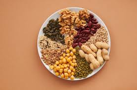

kacang kacangan
Kacang-kacangan adalah sebutan untuk biji yang berukuran relatif lebih besar dibandingkan serealia dan digunakan untuk bahan pangan bagi manusia dan hewan ternak. Kacang-kacangan umumnya didapatkan dari tanaman famili Fabaceae.
makanan sehat dan bergizi adalah jenis makanan yang mengandung nilai gizi seimbang dan diperlukan oleh tubuh
Kacang-kacangan adalah sebutan untuk biji yang berukuran relatif lebih besar dibandingkan serealia dan digunakan untuk bahan pangan bagi manusia dan hewan ternak. Kacang-kacangan umumnya didapatkan dari tanaman famili Fabaceae.